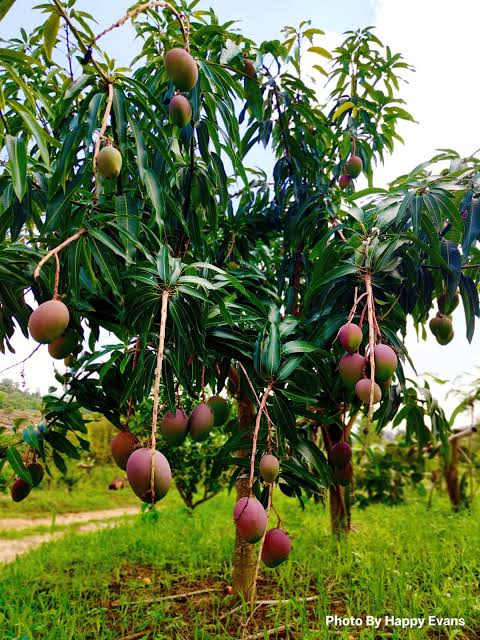
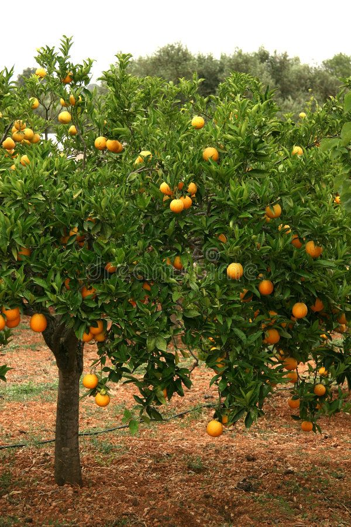
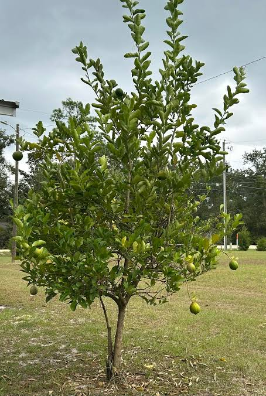
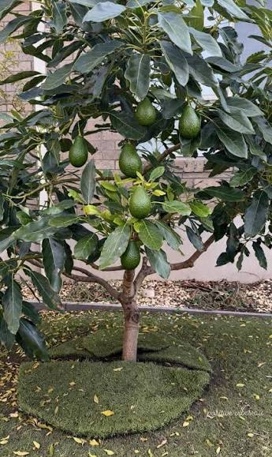
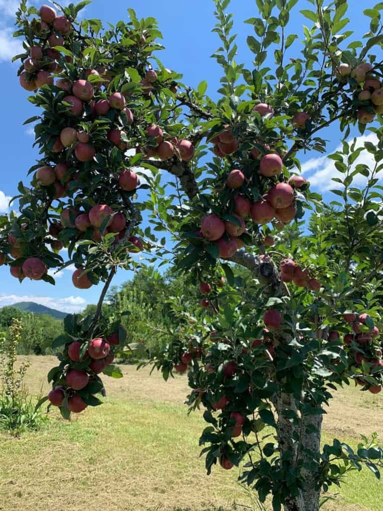
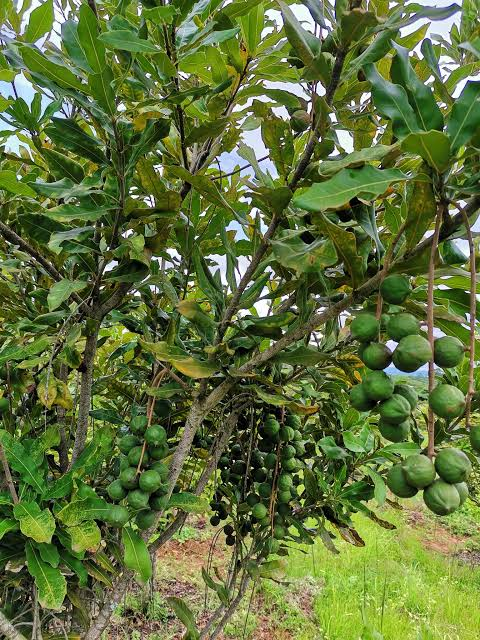

Featured Fruit Trees
Explore key step-by-step guides for popular fruit varieties below. The techniques shared here also apply to dozens of other fruit trees worldwide!

1. Mango Grafting
Learn about mango grafting, care, and how to produce healthy mango trees.

2. Orange Grafting
Discover grafting techniques for productive and healthy orange trees.

3. Lemon Grafting
Learn how grafting can help you grow strong and productive lemon trees.

4. Avocado Grafting
Explore avocado grafting and the steps needed to establish healthy seedlings.

5. Apple Grafting
Learn the basics of grafting and caring for apple trees.

6. Coffee Grafting
Learn about coffee propagation, grafting, and how to grow healthy coffee plants.

And Many More!
Grafting principles apply to peaches, plums, pears, guavas, macadamia, persimmons, and dozens of other species!